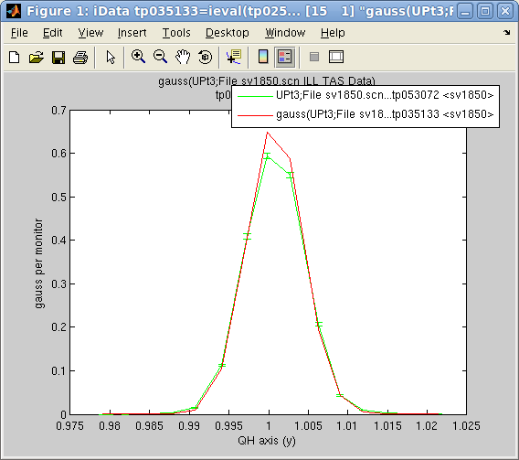
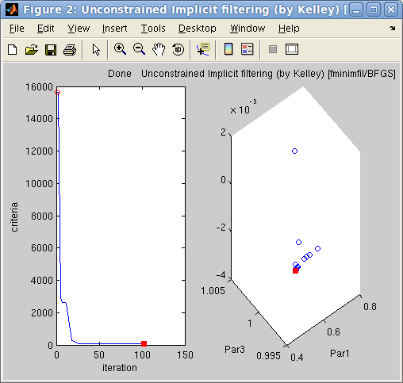

iFit: iData objects fitting
- Fitting
a model to the Data
- Getting most of the
fit results
- Specifying the optimization method
- Choosing an
optimization method
- Configuring the
optimization method
- Monitoring the
performance of the optimization method and the fit process
- Model parameter constraints
- Fixed parameters
- Parameters varying
within limits
- Limiting parameter change
- Estimating the model parameter
uncertainties
- Building model functions
- Specifying the optimization criteria
Commands we use in this page: iData/
fits,
ieval iFuncs models and
iOptim
routines
This documentation details the procedure that can be used to find
optimal parameter set from a model in order to match (fit) an iData
object Signal with axes.
Fitting
a
model
to
the
Data
The fits
function for iData objects provides a simple
mean to find the best model parameters which fit a data set.
>> a=load(iData, [ ifitpath 'Data/sv1850.scn' ])
>> p=fits(a);
'Amplitude' 'Centre' 'HalfWidth' 'Background'
0.6786 1.0008 0.0035 0.0002
will fit the data Signal/Monitor
to a default 1D Gaussian function 'gauss',
starting
from
automatically
guessed
initial
model
parameters. Of course, it is possible to chose explicitly
the model function, and the starting parameter set with e.g.
>> p=fits(a, 'gauss'); % specify model function to use: gauss, and use guessed parameters
>> p=fits(a, 'gauss', [ 0.5 1 0.01 0 ]); % specify the starting parameters for the model function
The result of the fits method
is the model parameter set that matches best the data.
A number of model functions is available from the iFuncs
sub-library. Refer
to the section below in order to learn
how to define new fit models. You can get information about a model by
inquiring its name. When an object is specified, starting parameters
are guessed :
>> gauss
>> gauss(a)
ans =
Type: 'iFit fitting function'
Name: 'Gaussian (1D)'
Parameters: {'Amplitude' 'Centre' 'HalfWidth' 'Background'}
Dimension: 1
Guess: [1 6.2172e-17 0.5861 0.1000]
Values: [1x100 double]
Axis: {[1x100 double]}
In
order
to
estimate
the
values
of the model for the fit parameters
onto the data set axes, one can use the ieval method,
which is the same as Matlab feval, but for iData objects:
>> b= ieval(a, 'gauss', p) % evaluate the 'gauss' model with parameters 'p' onto the 'a' data set axes
>> plot([ a b ])
The evaluated model contains Parameter
and Model aliases that hold
the model parameters and description.
The fits and ieval functions work with any data
and model dimensionality, and can also build multi-dimensional models
from lower dimensionality functions (e.g. making a 2D Gaussian from
multiplied perpendicular 1D Gaussians).
Getting most of the
fit results
The fits method can return
additional arguments
>> [parameters,criteria,message,output]= fits(a, model, initial_parameters,...)
The input arguments allow to specify:
- a: an iData object, or
an array of objects
- model: the name of the
function or a function handle
- initial_parameters: a
set of starting parameters for the model. Using an empty set will trigger an automatic estimate (guess) of the
starting model parameters.
The returned arguments are similar to those returned by the
Matlab fminsearch non-linear
optimizer:
- parameters: is the best
fit parameter set for the model
- criteria: is the
criteria value (least square
by default - see below on how to change this setting)
- message: is the final
optimization routine state
- output: is a structure
that holds all the information gathered during the fit procedure
The most interesting output argument result is the 4th one output,
which
provides significantly more information such as:
- output.algorithm: Algorithm
used
(char)
- output.message: Message
which details the final state of the optimizer (char)
- output.funcCount: Number of
function evaluations performed during the fit (double)
- output.iterations: Number of
iterations performed during the fit (double)
- output.parsHistory: Parameter
set history during optimization (double array)
- output.criteriaHistory: Criteria
history during optimization (double array)
- output.modelValue: Last model
evaluation (iData), that is ieval(a, model, parameters)
Specifying the optimization method
The iData fits
method is a wrapper to any of the iOptim
optimizers,
with a specified fit criteria, and constraints handling, even for
methods that do not support it natively. Each optimizer can be
customized (e.g. the maximum
number of iterations, the stop conditions, ...) with an options structure.
>> [parameters,criteria,message,output]= fits(a, model, initial_parameters, options)
Choosing an
optimization method
The iOptim sub-library provides 21 different
optimization techniques. No doubt that choosing one at first sight is
difficult. We provide below a set of preferred optimizer, based on a
careful comparison explained in the iOptim
documentation.
Optimizer
|
Description
|
Mean
Success
rate
(%)
|
Mean
execution
time
(s)
|
| fminimfil |
Unconstrained Implicit filtering
coupled with BFGS |
73.5 |
0.09 |
| fminralg |
Shor r-algorithm |
61.1 |
0.17 |
| fminpowell |
Powell Search |
56.5 |
0.06 |
| fminpso |
Particle Swarm Optimization |
58.5 |
0.85 |
| fminhooke |
Hooke-Jeeves direct search |
73.2 |
1.87 |
| fminswarm |
Particule
Swarm Optimizer (alt. implementation)
|
40.0 |
0.18 |
| fmincmaes |
Evolution Strategy with
Covariance Matrix Adaptation |
48.6 |
2.54 |
| fminsimpsa |
simplex/simulated
annealing |
36.9 |
0.34 |
Table 1: A selection of the most
efficient and fast optimization methods provided by the iFit/iOptim sub-library.
The choice of the optimizer is done through a 4th input argument options
to fits.
Configuring the
optimization method
In order to use these optimizers, one just has to specify their name as
a fits input argument, e.g. options='fminimfil' :
>> [parameters,criteria,message,output]= fits(a, model, initial_parameters, 'fminimfil')
will select the Unconstrained
Implicit filtering coupled with BFGS fminimfil
optimizer to perform the fit. The default optimizer configuration will
be used, as obtained from the optimiset
function, or from the method itself with 'defaults' as parameter. This
latter call (i.e. not with optimset) provides more informations:
>> options=fminimfil('defaults')
The optimizer configuration is
a structure which members enable to tune the behavior of the
optimization process. Each of the fields can be changed, e.g.
>> a=load(iData, [ ifitpath 'Data/sv1850.scn' ])
>> options=fminimfil('defaults')
>> options.TolFun=0.01;
>> p=fits(a, model, [], options);
In addition to the default optimset
structure fields, the iData fits
and the iOptim optimizers use
additional members in the structure:
- options.Display: Level
of display [ off | iter | notify | final ]. Default is 'off'
- options.MaxFunEvals: Maximum number of
function evaluations allowed
- options.MaxIter: Maximum number of
iterations allowed
- options.TolFun: Termination tolerance on
the function value (absolute value or change)
- options.TolX: Termination tolerance on
parameter change
- options.OutputFcn: Name of an output
function (see below). You may use 'fminplot', which is
provided in iOptim.
- options.FunValCheck: Check for invalid
values, such as NaN or complex
- options.algorithm: is a description of the
optimization method
- options.optimizer: is the name of the
optimization function
- and more, depending on the optimizer method and implementation
Monitoring the
performance of the optimization method and the fit process
In order to follow the optimization process, you may define a call to a
user function at each optimization iteration. A default plotting
facility has been implemented as the fminplot
function:
>> a=load(iData, [ ifitpath 'Data/sv1850.scn' ])
>> options=fminimfil('defaults')
>> options.OutputFcn='fminplot';
>> p=fits(a, 'gauss', [], options)
p =
0.6263 1.0008 -0.0037 0.0002
>> b = ieval(a, 'gauss', p)
>> figure; plot([ a b ])

Left: The
options.OutputFcn='fminplot' window
on
the
right,
showing
the
criteria evolution with the optimization
iteration and the 3 first fit parameters. The
red dot indicates the
current/final parameter set and criteria.
Right: The
final fit result on the left.
Also, as explained
above, it is possible
to obtain, on optimization completion, the whole criteria, and
parameter set history, as a function of iterations/criteria evaluations.
>> [p,criteria,message,output]= fits(a, 'gauss', [], options)
>> output.parsHistory
>> output.criteriaHistory
Model parameter constraints
In many cases, the model parameters are to be constrained. This
includes some fixed values, or bounds within which parameters should be
restricted. This is given to the fits method by mean of a 5th input
argument constraints
:
>> [parameters,criteria,message,output]= fits(a, model, initial_parameters, optimizer, constraints)
Fixed parameters
To fix some of the model parameters to their starting value, you just
need to define constraints as
a vector with 0 for free parameters, and 1 for fixed parameters, e.g. :
>> a=load(iData, [ ifitpath 'Data/sv1850.scn' ])
>> p=fits(a, 'gauss', [], 'fminimfil', [ 1 0 0 0 ])
** Minimization performed on parameters:
'Amplitude' 'Centre' 'HalfWidth' 'Background'
0.5936 0.9998 0.0018 0.0050
p =
0.5936 1.0008 -0.0037 0.0002
will fix the first model parameter, which is here the Amplitude. This can be checked
by simply entering the name of the model, which returns some
information structure :
>> gauss
ans =
Type: 'iFit fitting function'
Name: 'Gaussian (1D)'
Parameters: {'Amplitude' 'Centre' 'HalfWidth' 'Background'}
Dimension: 1
Guess: [1 6.2172e-17 0.5861 0.1000]
Values: [1x100 double]
Axis: {[1x100 double]}
A similar behavior is obtained when setting constraints as a structure
with a fixed member :
>> constraints.fixed = [ 1 0 0 0 ];
The constraints vector should
have the same length as the model parameter vector.
Parameters varying
within limits
If one needs to restrict the exploration range of parameters, it is
possible to define the lower and upper bounds of the model parameters.
This can be done by setting the 5th fits argument to the lower bounds lb, and the 6th to the upper ub, e.g. :
>> a=load(iData, [ ifitpath 'Data/sv1850.scn' ])
>> p=fits(a, 'gauss', [], 'fminimfil', [ 0.5 0.8 0 0 ], [ 1 1.2 1 1 ])
A similar behavior is obtained by setting constraints as a structure
with members min and max :
>> constraints.min = [ 0.5 0.8 0 0 ];
>> constraints.max = [ 1 1.2 1 1 ];
The constraints vectors
should have the same length as the model parameter vector.
Limiting parameter
change
Last, it is possible to restrict the change rate of parameters by
assigning the constraints.steps
field to a vector. Each non-zero value then specifies the absolute
change that the corresponding parameter can vary between two optimizer
iterations.
In short, the constraints structure can have the following members,
which all should have the same length as the model parameter vector:
- constraints.fixed: 1
for fixed parameter, 0 for free parameters
- constraints.min: the
minimum value for each parameter. -Inf is supported.
- constraints.max: the
maximum value for each parameter. +Inf is supported.
- constraints.steps: the
maximum change between iterations for each parameter. +Inf is supported.
All these constraints may be used simultaneously.
Estimating the model parameter uncertainties
Currently, the iFit suite
does not provide a simple way to estimate the parameter uncertainty
associated with a fit result. However, the output.parsHistory and output.criteriaHistory can provide
an estimate of the parameter tolerance around the found fit solution.
If one sets a criteria tolerance, say +100 % around the optimal
solution (that is 2*sigma), then we can search for all parameter sets
used during the optimization that satisfy this uncertainty relation,
and compute the corresponding standard deviation of the parameter
distributions :
>> a=load(iData, [ ifitpath 'Data/sv1850.scn' ])
>> [p,criteria,message,output]= fits(a, 'gauss', [], 'fminimfil');
>> index=find(output.criteriaHistory < min(output.criteriaHistory)*2); % identify tolerance region +50 % around optimum
>> sigma = std(output.parsHistory(index,:)); % compute standard deviation for these parameter sets
>> num2str([p ; sigma], 4) % display parameters and their uncertainty +/-
ans =
0.6264 1.001 -0.00365 0.0002173
0.004565 2.438e-05 3.159e-05 3.785e-05
This method relies on the fact that a significant number of parameter
sets and criteria evaluations must have been performed in the vicinity
of the final best fit. The choice of the tolerance region is also
important, but a +100% extent is probably realistic in most cases.
Building model functions
Specifying the optimization criteria
E.
Farhi - iFit/iData fitting - $Date:
2010-11-22 14:15:30$ $Revision: 1.7 $
- back to
Main iFit Page
{kind=link}
{kind=link}